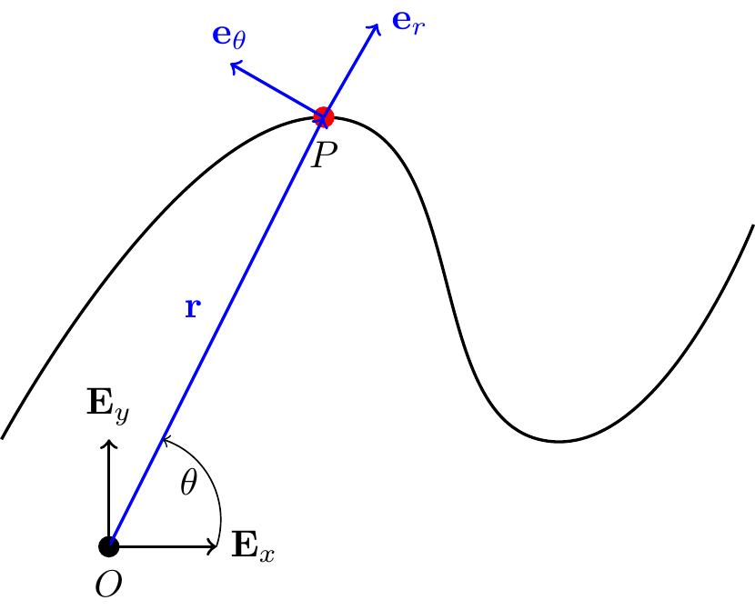
9 Cylindrical Polar Coordinate System
The cylindrical polar coordinate system is three-dimensional. We start by introducing the two-dimensional polar basis, then extend it to three dimensions.
9.1 Polar Basis
Consider a particle in motion in the two dimensional Euclidean space \(\mathbb{E}^2\). Define: \[\begin{align} r = \sqrt{x^2+y^2}\geq 0, \qquad \theta = \tan^{-1}\lp\frac{y}{x}\rp. \end{align}\] So \[\begin{align} x = r\cos(\theta), \qquad y = r\sin(\theta) \end{align}\]
Define the basis \(\{{\bf e}_r,{\bf e}_\theta\}\) as a rotation of \(\{{\bf E}_x,{\bf E}_y\}\) by angle \(\theta\) (positive CCW about \({\bf E}_z\)):
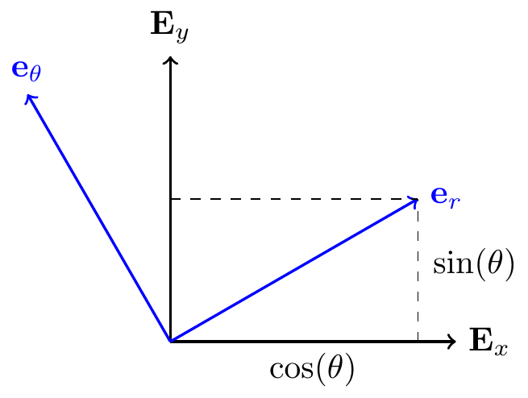
TipThink!
Question: Express \({\bf e}_r\) and \({\bf e}_\theta\) in the Cartesian basis.
NoteAnswer
\[\begin{align} {\bf e}_r &= \cos(\theta){\bf E}_x+\sin(\theta){\bf E}_y,\\ {\bf e}_\theta &= -\sin(\theta){\bf E}_x+\cos(\theta){\bf E}_y. \end{align}\]
\(\{{\bf e}_r,{\bf e}_\theta\}\) is an orthonormal basis: \({\bf e}_r\cdot{\bf e}_r = 1\), \({\bf e}_\theta\cdot{\bf e}_\theta = 1\), \({\bf e}_r\cdot{\bf e}_\theta=0\).
- \({\bf e}_r\) points in the direction of increasing \(r\).
- \({\bf e}_\theta\) points in the direction of increasing \(\theta\).
TipThink!
Question: Calculate \(\dot{\bf e}_r (=\dot{\theta}{\bf e}_\theta)\) and \(\dot{\bf e}_\theta (= \dot{\theta}{\bf e}_r)\).
NoteAnswer
\[\begin{align} \begin{split} {\bf e}_r = {\bf e}_r(\theta) &\implies \frac{d{\bf e}_r}{d\theta} = -\sin(\theta){\bf E}_x+\cos(\theta){\bf E}_y = {\bf e}_\theta\\ {\bf e}_\theta = {\bf e}_\theta(\theta) &\implies \frac{d{\bf e}_\theta}{d\theta} = -\cos(\theta){\bf E}_x-\sin(\theta){\bf E}_y = -{\bf e}_r \end{split} \end{align}\]
You can also see this result geometrically,
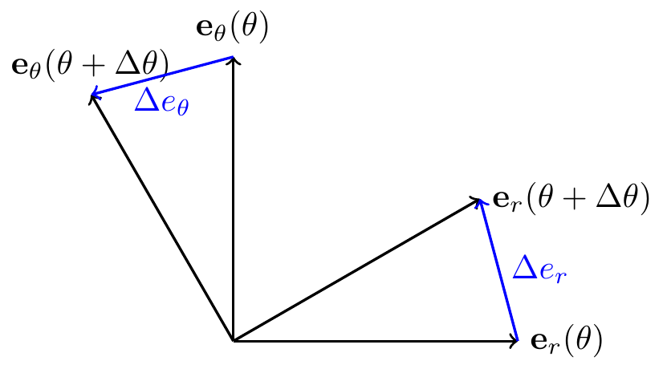
Thus, for small \(d\theta>0\), \[\begin{align} \begin{split} {\bf e}_r(\theta+d\theta)-{\bf e}_r(\theta) &\text{ points in the direction of }{\bf e}_\theta(\theta)\\ {\bf e}_\theta(\theta+d\theta)-{\bf e}_\theta(\theta) &\text{ points in the direction of }-{\bf e}_r(\theta) \end{split} \end{align}\]
9.2 Kinematics in Polar Coordinates
We can write the position vector to the particle as \({\bf r} = r{\bf e}_r\) (with \(r\geq 0\)). Note that \({\bf e}_r\) is a function of \(\theta\). Both \(r\) and \(\theta\) are functions of time \(t\).
TipThink!
Question: Show that \({\bf v} = \dot{r}{\bf e}_r+r\dot{\theta}{\bf e}_\theta\) and \({\bf a} = \lp \ddot{r}-r\dot{\theta}^2\rp{\bf e}_r+\lp 2\dot{r}\dot{\theta}+r\ddot{\theta}\rp{\bf e}_\theta\).
NoteAnswer
\[\begin{align*} {\bf v} &= \dot{r}{\bf e}_r+r\dot{\bf e}_r\\ &= \dot{r}{\bf e}_r+r\frac{d{\bf e}_r}{d\theta}\dot{\theta}\\ &= \dot{r}{\bf e}_r+r\dot{\theta}{\bf e}_\theta.\\ {\bf a} &= \ddot{r}{\bf e}_r+\dot{r}\dot{\bf e}_r+\dot{r}\dot{\theta}{\bf e}_\theta+r\ddot{\theta}{\bf e}_\theta+r\dot{\theta}\dot{\bf e}_\theta\\ &= \lp \ddot{r}-r\dot{\theta}^2\rp{\bf e}_r+\lp 2\dot{r}\dot{\theta}+r\ddot{\theta}\rp{\bf e}_\theta. \end{align*}\]
Note the components of acceleration vector:
- \(r\ddot{\theta}\): tangential
- \(\ddot{r}\): radial
- \(r\dot{\theta}^2\): centripetal
- \(2\dot{r}\dot{\theta}\): Coriolis
Historical Perspective: Gaspard-Gustave de Coriolis (1792–1843)
Coriolis was a French mathematician and mechanical engineer at the École Polytechnique. His 1835 memoir Sur les équations du mouvement relatif des systèmes de corps worked out, for the first time in full generality, the extra terms that appear when Newton’s laws are written for an observer in a rotating frame – motivated not by weather or ocean currents, but by the mechanics of rotating machinery such as waterwheels and turbines. The term \(2\dot{r}\dot{\theta}\) above is the one that now carries his name.
The same underlying fact – that differentiating a vector expressed in a basis which is itself rotating produces terms beyond the plain derivatives of its components – had already appeared, without a name, in the Serret-Frenet formulae for a particle tracing a fixed space curve. It took much longer, well into the following century, for “the Coriolis effect” to enter popular use, once physicists and meteorologists adopted it to explain the deflection of winds and ocean currents on the rotating Earth.
We may also introduce the notation \[\begin{align*} {\bf r} &= r{\bf e}_r+0{\bf e}_\theta\\ {\bf v} &= v_r{\bf e}_r+v_\theta{\bf e}_\theta\\ {\bf a} &= a_r{\bf e}_r+a_\theta{\bf e}_\theta \end{align*}\]
Remark: \(a_r \neq \dot{v}_r\). Be careful: \(v_r = \dot{r}\) so \(\dot{v}_r = \ddot{r}\), but \(a_r = \ddot{r} - r\dot{\theta}^2 \neq \dot{v}_r\) in general.
Remark: When to use polar vs Cartesiancoordinates? For rectilinear motions, Cartesian coordinates are usually easiest. For problems where \(r\) is directly measured (e.g. radar tracking as in MKB 2/121.), polar coordinates are natural.
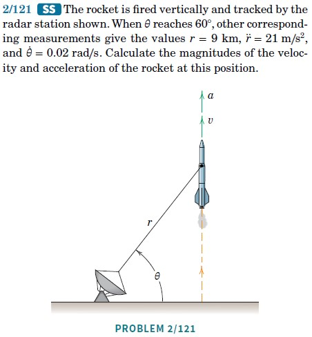
9.3 Example: Nonlinear Pendulum
Consider a particle of mass \(m\) suspended by a massless inextensible string of length \(\ell\). Find the equation of motion of the particle and the tension in the string.
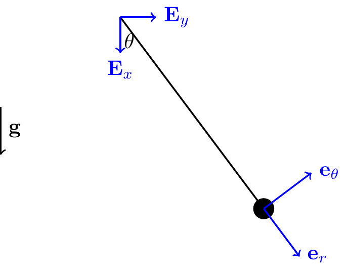
The planar motion of the particle is constrained by the string. This constraint can be expressed mathematically in Cartesian and polar coordinates respectively as \[\begin{align} \sqrt{x^2+y^2} = \ell \end{align}\] \[\begin{align} r = \ell = \text{const.} \implies \dot{r}=0,\ \ddot{r} = 0. \end{align}\] Note that the constraint is simpler in polar coordinates. This is a common theme: the right choice of coordinates can simplify the problem significantly.
TipThink!
Question: How many degrees of freedom does this system have?
NoteAnswer
One. A particle in the plane has 2 DOFs, but the constraint \(r=\ell\) removes one. Knowing \(\theta(t)\) completely describes the motion.
Following the four steps:
- Our system is the particke. Choosing polar coordinates, we write its position, velocity, and acceleration as \[\begin{align*} {\bf r} &= \ell{\bf e}_r, \quad {\bf v} = \ell\dot{\theta}{\bf e}_\theta, \quad {\bf a} = \ell\ddot{\theta}{\bf e}_\theta-\ell\dot{\theta}^2{\bf e}_r. \end{align*}\]
NoteOrienting \({\bf e}_\theta\)
\({\bf e}_\theta\) points in the direction of increasing \(\theta\), determined by the right-hand rule: point the thumb along \({\bf E}_z\); your fingers curl in the direction of increasing \(\theta\).
- Forces: \[\begin{align*} {\bf T} &= T\lp-{\bf e}_r\rp, \quad {\bf W} = mg\lp\cos(\theta){\bf e}_r-\sin(\theta){\bf e}_\theta\rp. \end{align*}\]
NoteRemark: Tension
\({\bf T}\) is a constraint force keeping the particle on a circular path. If \(T>0\), the wire is in tension. The tension is the same throughout because the wire is massless.
Balance of linear momentum: \[\begin{align*} mg{\bf E}_x-T{\bf e}_r &= m\ell\lp\ddot{\theta}{\bf e}_\theta-\dot{\theta}^2{\bf e}_r\rp. \end{align*}\]
Projecting along \({\bf e}_\theta\) (hides unknown tension) and results in the equation of motion for \(\theta\): \[\begin{align*} -mg\sin(\theta) &= m\ell\ddot{\theta} \implies \ddot{\theta}+\frac{g}{\ell}\sin(\theta) = 0 \end{align*}\] which can be solved numerically for \(\theta(t)\) given IC’s \(\theta(0), \dot{\theta}(0)\). This is a nonlinear ODE. For small \(\theta\), we can linearise \(\sin(\theta)\approx \theta\) and solve the resulting simple harmonic motion equation by hand \[\begin{align*} \ddot{\theta}+\frac{g}{\ell}\theta = 0 \end{align*}\]
Projecting along \({\bf e}_r\) gives the tension: \[\begin{align*} T = m\lp\ell\dot{\theta}^2+g\cos(\theta)\rp \end{align*}\]
9.4 Types of Accelerations Explained
The goal of this section is to give physical intuition for the different components of acceleration in polar coordinates.
Recall: \[\begin{align*} {\bf a} = \lp\ddot{r}-r\dot{\theta}^2\rp{\bf e}_r+\lp2\dot{r}\dot{\theta}+r\ddot{\theta}\rp{\bf e}_\theta. \end{align*}\]
TipThink!
Question: Can you think of physical systems where the acceleration of the particle is purely tangential, purely radial, purely centripetal, or purely Coriolis?
NoteAnswer
…
- Radial \(\ddot{r}\): particle on a spring in rectilinear motion.
- Centripetal \(-r\dot{\theta}^2\): particle on a circle at constant speed — the normal force steers the particle.
- Tangential \(r\ddot{\theta}\): It is not possible to have purely tangential acceleration without a nonzero centripetal acceleration. A particle pushed along a circle with varying speed constitutes a minimal example that has both tangential and centripetal acceleration.
- Coriolis \(2\dot{r}\dot{\theta}\): It is not possible to have purely Coriolis acceleration without a nonzero centripetal acceleration. A minimal example of nonzero Coriolis acceleration is a particle in a tube rotating at constant angular velocity. The Coriolis acceleration is due to both the rotation of the tube and the radial motion of the particle inside the tube.
9.4.1 Example: Particle in a Rotating Tube
Consider a particle of mass \(m\) inside a tube rotating at constant angular velocity \(\omega\) about the vertical axis. The tube is horizontal and frictionless. Find the equation of motion for \(r(t)\) and the normal force on the particle.
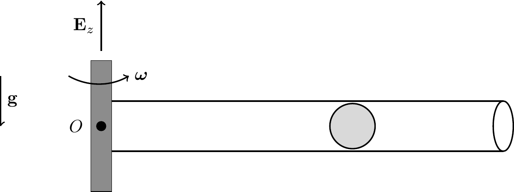
Following the four steps:
Kinematics: Here \(\dot{\theta} = \omega = \text{const.}\), \(\ddot{\theta} = 0\), so \[\begin{align*} {\bf r} = r{\bf e}_r, \quad {\bf v} = \dot{r}{\bf e}_r+r\omega{\bf e}_\theta, \quad {\bf a} = \lp\ddot{r}-r\omega^2\rp{\bf e}_r+2\dot{r}\omega{\bf e}_\theta. \end{align*}\]
Assume no friction: \({\bf N} = N_\theta{\bf e}_\theta+N_z{\bf E}_z\), \({\bf W} = -mg{\bf E}_z\).
The balance of linear momentum is \[\begin{align*} {\bf F} &= \dot{\bf G},\\ N_\theta{\bf e}_\theta+N_z{\bf E}_z - mg{\bf E}_z &= m\lp\ddot{r}-r\omega^2\rp{\bf e}_r+2m\dot{r}\omega{\bf e}_\theta. \end{align*}\]
Projecting this equation along \({\bf e}_r\) and \({\bf e}_\theta\) gives, \[\begin{align*} \lp{\bf F} = \dot{\bf G}\rp\cdot{\bf e}_r &\implies \ddot{r}-\omega^2 r = 0 \quad (\text{EOM for } r(t)),\\ \lp{\bf F} = \dot{\bf G}\rp\cdot{\bf e}_\theta &\implies N_\theta = 2m\dot{r}\omega \quad (\text{Coriolis reaction}). \end{align*}\]
NoteCoriolis acceleration
As the particle moves outward, \(r\omega\) increases. The tube must supply the \({\bf e}_\theta\) acceleration \(2\dot{r}\omega\) so the particle stays inside.
9.4.2 Example: Particle Pushed in a Circle
Consider a particle of mass \(m\) on a horizontal circular guide. The particle is pushed by a force \({\bf P}\) in the \({\bf e}_\theta\) around the circle of radius \(R\) at constant angular velocity \(\omega\). Find the normal force on the particle.
Following the four steps:
\[\begin{align*} {\bf r} &= R{\bf e}_r+H{\bf E}_z\\ {\bf v} &= R\dot{\theta}{\bf e}_\theta\\ {\bf a} &= R\ddot{\theta}{\bf e}_\theta-R\dot{\theta}^2{\bf e}_r \end{align*}\]
The normal force \({\bf N}\) from the track has components in the \({\bf e}_r\) and \({\bf E}_z\) directions. \[\begin{align*} {\bf P} &= P{\bf e}_\theta\quad ({\bf P} = P{\bf E}_y \text{ only at initial instant.})\\ {\bf W} &= mg\lp-{\bf E}_z\rp = -mg{\bf E}_z\\ {\bf N} &= N_r\lp-{\bf e}_r\rp+N_z{\bf E}_z \end{align*}\]
The balance of linear momentum is \[\begin{align*} -N_r{\bf e}_r+\lp N_z-mg\rp{\bf E}_z+P{\bf e}_\theta = mR\lp\ddot{\theta}{\bf e}_\theta-\dot{\theta}^2{\bf e}_r\rp \end{align*}\]
Projecting along \({\bf e}_\theta\), \({\bf e}_r\), and \({\bf E}_z\) gives \[\begin{align*} \lp{\bf F}=\dot{G}\rp\cdot{\bf e}_\theta &\quad P=mR\ddot{\theta}\\ \lp{\bf F}=\dot{G}\rp\cdot{\bf e}_r &\quad N_r=mR\dot{\theta}^2\\ \lp{\bf F}=\dot{G}\rp\cdot{\bf E}_z &\quad N_z=mg \end{align*}\] The first of these equations hides \({\bf N}\) and provides an EOM for \(\theta(t)\) that can be solved given the ICs \(\theta_0, \dot{\theta}_0\).
The second and third of these equations provide the constraint force components. \(N_r\) supplies the centripetal acceleration which steers the particle. \(N_z\) holds up the particle and ensure \(\ddot{z}=0\).
9.5 Cylindrical-Polar Coordinates
Consider a particle in motion in three-dimensional Euclidean space \(\mathbb{E}^3\). We can extend the polar coordinate system by adding a vertical coordinate \(z\) and a vertical basis vector \({\bf E}_z\). The radial unit vector \({\bf e}_r\) lies along the projection of \({\bf r}\) in the \(\{{\bf E}_x,{\bf E}_y\}\) plane.
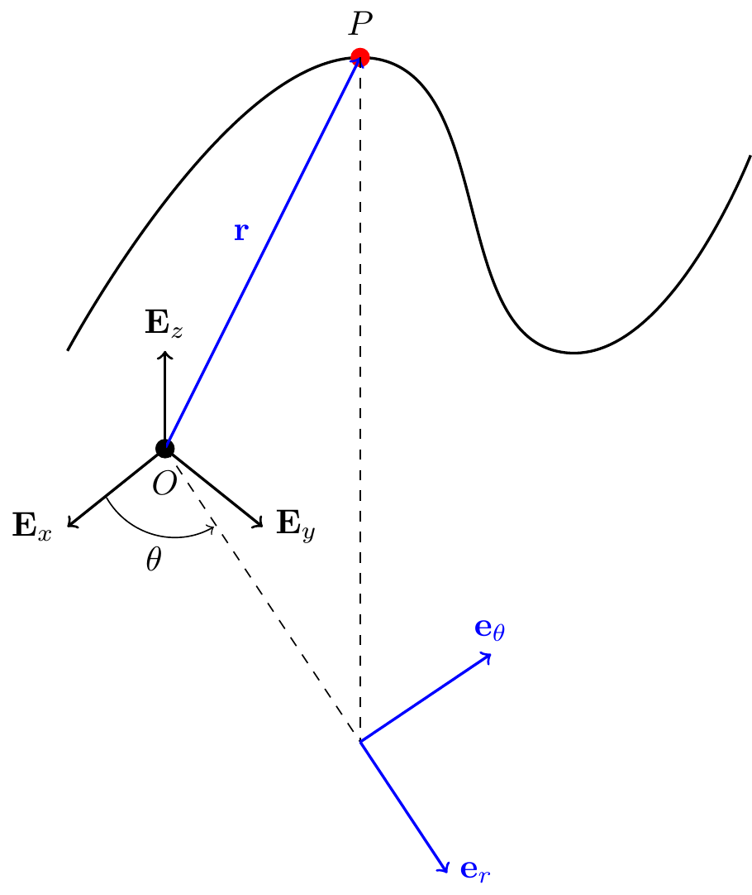
In summary, \[\begin{align*} \begin{bmatrix}{\bf e}_r\\ {\bf e}_\theta\\ {\bf E}_z\end{bmatrix} = \begin{bmatrix}\cos(\theta) & \sin(\theta) & 0\\ -\sin(\theta) & \cos(\theta) & 0\\ 0 & 0 & 1\end{bmatrix} \begin{bmatrix}{\bf E}_x\\ {\bf E}_y\\ {\bf E}_z\end{bmatrix}. \end{align*}\]
The position, velocity, acceleration of the particle are \[\begin{align*} {\bf r} &= r{\bf e}_r+z{\bf E}_z,\\ {\bf v} &= \dot{r}{\bf e}_r+r\dot{\theta}{\bf e}_\theta+\dot{z}{\bf E}_z,\\ {\bf a} &= \lp\ddot{r}-r\dot{\theta}^2\rp{\bf e}_r+\lp2\dot{r}\dot{\theta}+r\ddot{\theta}\rp{\bf e}_\theta+\ddot{z}{\bf E}_z. \end{align*}\]
9.6 Summary
Cylindrical polar basis \(\{\mathbf{e}_r,\mathbf{e}_\theta,\mathbf{E}_z\}\): \[\begin{align} \mathbf{e}_r &= \cos\theta\,\mathbf{E}_x+\sin\theta\,\mathbf{E}_y, & \mathbf{e}_\theta &= -\sin\theta\,\mathbf{E}_x+\cos\theta\,\mathbf{E}_y, \\ \dot{\mathbf{e}}_r &= \dot\theta\,\mathbf{e}_\theta, & \dot{\mathbf{e}}_\theta &= -\dot\theta\,\mathbf{e}_r. \end{align}\]
Position, velocity, acceleration: \[\begin{align} \mathbf{r} &= r\mathbf{e}_r+z\mathbf{E}_z,\\ \mathbf{v} &= \dot r\,\mathbf{e}_r + r\dot\theta\,\mathbf{e}_\theta + \dot z\,\mathbf{E}_z,\\ \mathbf{a} &= (\ddot r-r\dot\theta^2)\mathbf{e}_r + (r\ddot\theta+2\dot r\dot\theta)\mathbf{e}_\theta + \ddot z\,\mathbf{E}_z. \end{align}\]
9.7 Lecture Videos
9.8 Exercises
In both the following problems, set up a cylindrical polar coordinate system whose origin is taken to be at the vertex of the cone.
a.
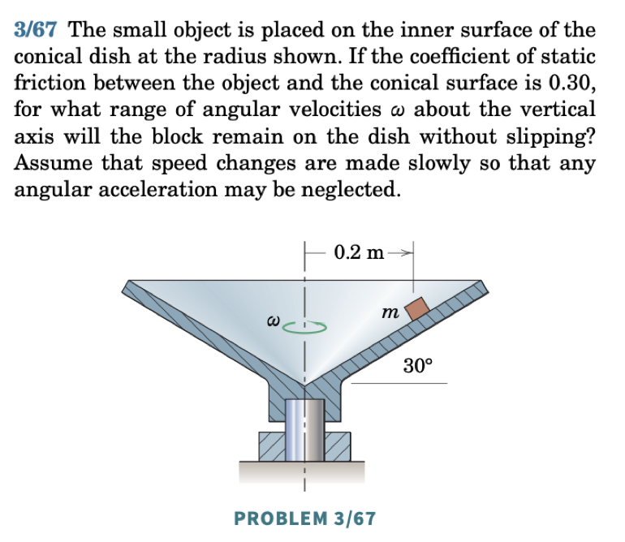
See an animation of the cylindrical-polar basis for a particle moving aroubd a cone here.
b.
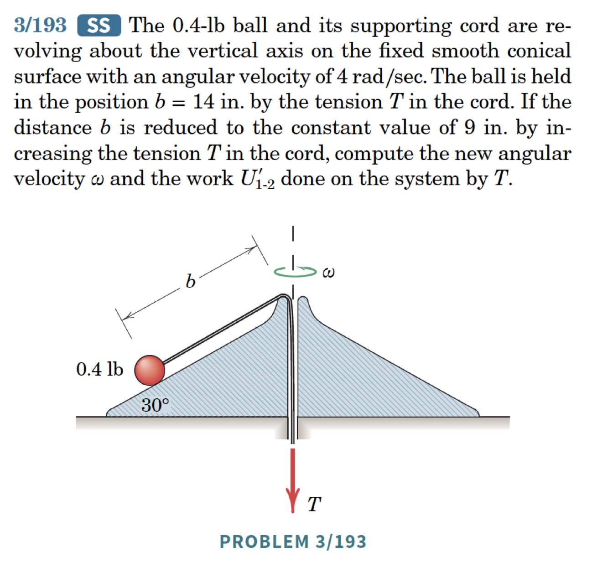
The following problems are from Set 05 – Cylindrical Polar Coordinates.
1. [MKB 2/121] Take the origin at the satellite; \(\mathbf{E}_x\) rightwards, \(\mathbf{E}_y\) upwards. Write the position in both cylindrical and Cartesian coordinates. (ans. \(v = 360\) m/s, \(a = 20.1\) m/s\(^2\))
2. [MKB 02-105] Take \(\mathbf{E}_x\) rightwards and \(\mathbf{E}_y\) upwards; write the car’s position in both bases. (ans. \(\dot r = 47.7\) ft/sec, \(\dot\theta = -41.0\) deg/sec)
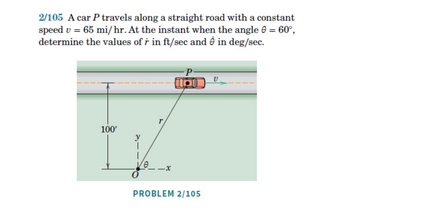
3. [MKB 02-126] Write \(\mathbf{r}_P = (0.75+\ell)\mathbf{e}_r\) m and differentiate. If the setup is in the vertical plane, find the force applied by the robot arm. (ans. \(v=0.296\) m/s, \(a=0.345\) m/s\(^2\))
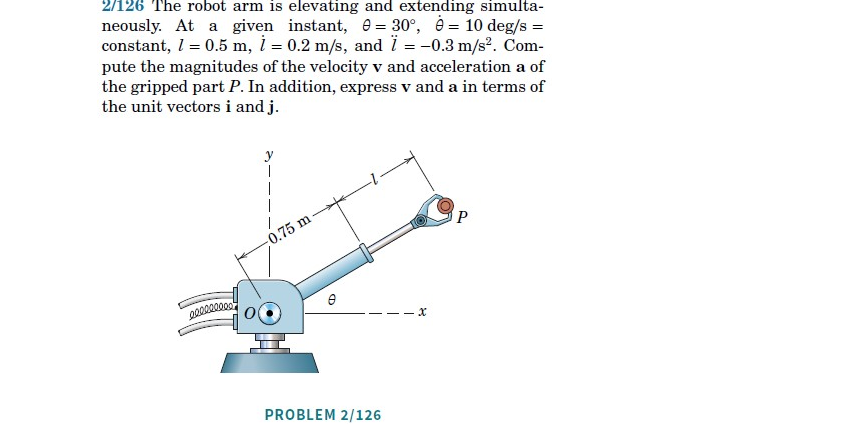
4. [MKB 03-037] Apply the 4 steps at points \(A\) and \(B\) independently; origin at the centre of curvature. (ans. \(N_A = 10.89\) N, \(N_B = 8.30\) N)
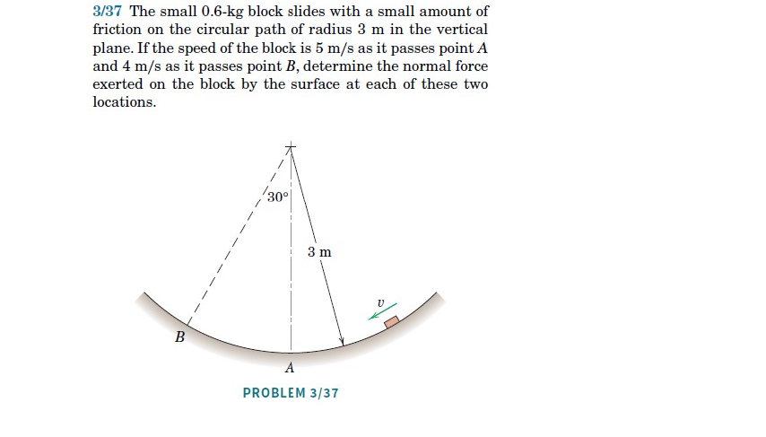
5. [Primer Exercise 2.6]
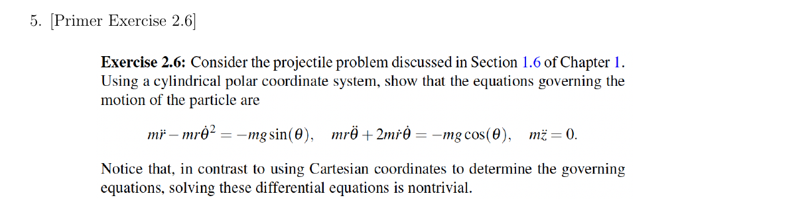
6. [Primer Exercise 2.7]
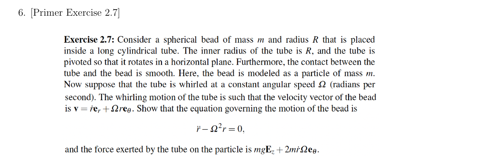
7. [Primer Exercise 2.8]
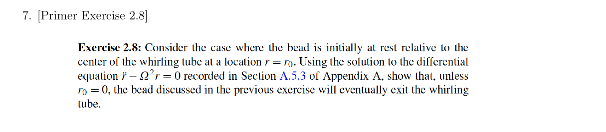